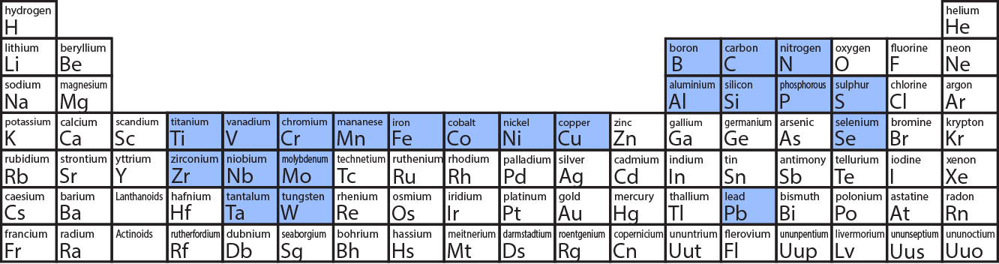

iron atomic number : 26 , density :7.874 g/cm3,
- Steel types
name Carbon % Wrought Iron < 0.008 Low Carbon Steel < 0.30 Medium-carbon Steel 0.30–0.60 High-carbon Steel 0.60–1.7 High-speed Steel 0.85–1.5 Cast Iron 2-4 Pig Iron 4-6 Cementite Fe3C >6 - Steel type details
- Low Carbon Steel : Also called mild steel or machine steel. Does not contain enough carbon to be hardened, but can be case hardened. Used for parts, which do not need to be hardened, like nuts, bolts, washers, sheet steel, and shafts. Also used in structural steel and machine tool frames.
- Medium-carbon Steel: May be hardened. Used where greater tensile strength than low-carbon steel is needed. Used for tools like hammers, wrenches, and screwdrivers, which are drop-forged and then hardened.
- High-carbon SteelMay be hardened. Also known as tool steel. Used for cutting tools, punches, taps, dies, reamers, and drills.
- High-speed SteelHardenable. Used for lathe and milling machine cutting tools and drill bits. Retains hardness and cutting edge at red heat. alloying elements are used to improve proprty
- Iron-Carbon diagram
- importance :diagram expalin following three related things
- Fe lattice structure (BCC/FCC)decides amount of carbon it can hold
- Fe lattice structure (BCC/FCC) changes with temperature
- Fe latice structure, change temperaure ,depends on amount of carbon it has
- iron carbon does not explain time effect , i.e change swhen cooled fast, like tempering
- X axis left end is Iron at 0%C and right end is cementite with 6 %C
- iron carbon : DIAGRAM
- Impotant points
- forms of iron :Delta/Gamma (austenite)/ Aplha(ferrite). more details
symbol name temp. at 0%C structure max C % δ delta Ferrite above aprox1400 BCC 0.08% γ gamma austenite above aprox912 FCC 2.14% α alpha ferrite below 912 BCC 0.8% Fe3C Cementite normal temp BC-Orthorombic,L≠B≠H 6% ~ Pearlite normal temp cementite+ferrite ~ Martensite Quenching BC-tetragonal
L=B≠H~ Bainite Tempering cementite+ferrite+some martensite - FCC structure can hold more carbon than BCC structure
- there are other arrangement even in body centre eg: tetragonal ,orthorombic
- Austenite is soft, ductile tough and malleable. hot rolling is done in this stage due to ductility
- ferrite:Ferrite is ferromagnetic below Curie temperature, 768°C
- cementite:It is an interstitial intermediate compound having a fixed carbon content of 6.67%.
- Alloy steel elements such as nickel, manganese, chromium, and molybdenum affect the position of these boundaries on the phase diagram. The boundaries may shift in either direction depending on the element used. For example, in the iron carbon phase diagram, addition of nickel lowers the A3 boundary while the addition of chromium raises it
- Eutectic Point:Eutectic point is a point where multiple phases meet. For the iron-carbon alloy diagram, the eutectic point is where the lines A1, A3 and ACM meet. The formation of these points is coincidental. At these points, eutectic reactions take place where a liquid phase freezes into a mixture of two solid phases. This happens when cooling a liquid alloy of eutectic composition all the way to its eutectic temperature.
- thermal arrest:Normally, when heating an alloy, its temperature increases. But along these lines (A1, A2, A3, A4, and ACM) the heating results in a realignment of the structure into a different phase and thus, the temperature stops increasing until the phase has changed completely
- for more info visit : visit site for more info
- TTT diagram (time temperature transformation)
- Diagram

- important points
- there are two curves(light blue color ) for process start and process end
- martensite start and end is instantaneous ,speed of sound
- can explaing different process like , quenching /tempering/martempering/austempering
TTT gives kinetic of isothermal transformation. it is temperature vs log of time of certain composition
visit site for more info - Diagram
- Alloying Elements
- Alloying periodic table effect

- Alloying Summary
property C Si P S Ti Cr Mn Ni Cu Mo Mechanical Properties C Si P S Ti Cr Mn Ni Cu Mo Corrosion Resistance C Si P S Ti Cr Mn Ni Cu Mo High Temp Resistance C Si P S Ti Cr Mn Ni Cu Mo Weldibility C Si P S Ti Cr Mn Ni Cu Mo Cold Workability C Si P S Ti Cr Mn Ni Cu Mo machinability C Si P S Ti Cr Mn Ni Cu Mo - Alloying details (order:periodic table)
- Boron-B:
Boron is added to steel in amounts of 0.0005 to 0.003% to improve hardenability. In combination with other alloying elements, boron acts as an "intensifier", increasing the depth of hardening during quenching
- Carbon-C:
Produces the properties in steel that give it strength. As carbon content increases, there is a corresponding increase in tensile strength and hardness. Additionally, as carbon content increases,steel becomes increasingly responsive to heat treatment.
- Nitrogen-N
Strain ageing has embrittlement effect which takes place after cold deformation by diffusion of nitrogen in steel. Hence, there is limitation stated in some design codes to restrict the nitrogen content of steel to 0.012%.
- Alumnium-Al:
When added to molten steel, mixes very quickly with any undissolved oxygen and is therefore considered one of the most common deoxidizers in making steel. Aluminum also is used to produce a fine grain structure and to control grain growth
- Silicon-Si:
Is the most common deoxidizing agent. In amounts up to 1% it has a marked strengthening and toughening effect. In higher amounts it produces electrical resistance and gives high magnetic permeability.
- Phosphorus-P
Is seldom deliberately added to steel but is carried as a residual or incidental element. When it is added it is usually for the purpose of machinability. Phosphorous is present in all steels and tends to increase resistance to corrosion while increasing yield strength.
- Sulphur-S:
Is usually found in all steels and like phosphorus is considered a residual element. When added purposely it substantially increases machinability.The amount for this purpose is usually from .06 to 30%. Sulfur is considered the basic element for free machining steels It is,however, detrimental to the hot forming properties
- Titanium-Ti:
Titanium is added to 18-8 stainless steels to make them immune to harmful carbide precipitation. It is sometimes added to low carbon sheets to make them more suitable for porcelain enameling
- Vanadium-V:
Is a strong deoxidizer and promotes fine grain structure. It helps steel resist softening at elevated temperatures and seems to resist shock better than steels without it.
- Chromium-Cr
Like carbon, chromium helps the response to heat treatment. An increase in depth of hardness is also noticed with its use. When used in large quantities, it possesses a remarkable resistance to oxidation and corrosion. Used in conjunction with other alloys, chromium is one of the popular alloying elements
- Manganese-Mn:
Is next to carbon in its importance in steel making. This is due primarily because of its ability to resist hot shortness or the tendency to tear while being forged or rolled. Manganese is used in almost every steel made, increasing responsiveness to heat treatment and acting as a deoxidizer
- Iron-Fe:
Although it lacks strength, iron is very soft and ductile, and does not respond to heat treatment to any degree. Iron is the primary element in steel. With the addition of other alloying elements, required mechanical properties can be achieved
- Cobalt-Co
Is used to increase the red hardness of a steel. It adds much life to a tool by its ability to maintain hardness and cutting ability when it's heated to a dull red during a machining operation
- Nickel-Ni:
Increases strength and toughness and has good fatigue resistance Steels with nickel usually have more impact resistance than steels where nickel is absent. This is true especially at lower temperatures
- Copper-Cu:
Is usually added in amounts of .20 to .30% and helps steel resist corrosion. It also helps in some degree to increase tensile and yield strengths with only a t loss in ductility
- Molybdenum-Mo:
Raises hot strength, has good creep resistance and helps steel resist softening at elevated temperatures. It is used to a large extent in tools and dies intended for hot working of metal.
- Tungsten-W:
Promoted red hardness and hot strength in addition to producing dense grain and a keen cutting edge. These properties make tungsten steels very useful for hot working applications such as cutting tools when the steel is hot enough to be low red in color
- Boron-B:
- Alloying periodic table effect
- Theory
- strip enters a stand when, friction force >= force pushing out of stands.
Pulling force = friction force*cosα, where μ=coeff of frcition of steel and roll , α=bite angle
Pushing Force=N*sin α , where N=normal force exereted by rolls. - rolling boundary condition : μ*N*cosα=N*sinα
- for rolling μ=tanα
- for heigth reduction both forces add up , so compression force = μ*n*sinα+N*Cosα
- strip enters a stand when, friction force >= force pushing out of stands.
- max reduction possible, δh=μ2 r , where δh=height reduction, ,r=work roll radius;
- max reduction is dependent on roll diameter and coeff of friction
- friction forces changes direction at neutral point.
at entering material speed Vr is less than roll speed, friction force is in rolling direction.
at neutral point material speed =roll speed , here friction force is 0.
while exiting material speed Vf more than roll speed and friction force is opposite to rolling direction - forward slip = (Vf-Vr)/Vr
- roll pressure distribution as shown below , it is denoated by p
it is broken in two parts , area under shade is force required to overcome friction
area below dashed line is force required for thickness reduction - metal undergoes plastic deformation and roll undergoes very less elastic deformation
- force calculation, F= p*strip width * length of contact arc
force=p*b*L p , where L p is project contact arc length
L p=Sqrt(R* δh) - force=p*b* sqrt(R*δh)
- volume in conserved hence . A1V1=A2V2. this can be used to find R factor
- main equation
- max reduction :δh max= μ2 R
- coeff of friction:μ=tanα
- angle of contact α: tanα=√(δh/R)
- arc of contact : Lp=√(δh*R)
- roll force : F =Pavg*b*Lp=Pavg*b* √(R*δh), P depends of roll material
- torque : T= F*a*Lp
- power :P=(2*π*N*T)/60 : 2 as both upper and lower roll.
- Metallurgy of rolling
- HOT Rolling
- better to roll in austenite , which is mallable due to FCC structure
- easier to roll as μ of hot metal is more
- rolling of any shape is possible .
- less power and more production rate.
- hot rolling grains are broken and new finer and better aligned grains are formed, so temperature to be higher than recrystalization temperature.
- sulphur causes hort shortness and hence meting at higher temp
- problem:controlling spread is challenge, dimension control is not as accurate as cold roll
- problem:many surface defects like rolling of scale and impurity
- internal defects and shape defects , like waviness ,cracks, fish tail
- Minimum Tension Control: works only on head / compare load when, head has not entered upstream stand , vs when head has just entered upstream stand .
- loop control : works in body/ help of loop sacnner / vertical and horizontal looper
- COLD Rolling
- better physical dimension control and less spread.
- less reduction as μ of cold steel is less, also limitation in giving shape. more power less production rate .
- better surface finish
- some lubricants can be used as temperature is less, also it is clean so not impurity or scale rolling .
- strain hardeninig of stell can be done , by elastic deformation
- Roll and guide
- Rolls(arbour is the shaft)
- HSS , high speed steel
- SG roll : spherical graphite roll
- TC: tungsten carbide/ solid TC is used only in samll rolls like NTM
- Combi roll: arbor is steel for flexibility , outer layer is tugnsten carbide , methods of fixing :
- Clamping: failure prone
- heating and then shrink fit: failure prone
- CIC: cast in carbide , casting it along with steel
- Guide
- static guide
- RE: roller entry
- RTD: delivery
- shear
- cut position
- home position
- sync position
- lead speed: it is some time added as shaer might lose speed on contact with material , genraly done in thicker section
- pinch roll
- Speed control mode
- Torque control mode
- lead speed
- Rolls(arbour is the shaft)
- Long products parameter
- Mechanical
- YS: yield strength / unit: Mpa
- UTS: ultimate tensile strength /unit: Mpa
- UTS/YS / unit: ratio
- % elongation
- Bend test :To check the bendability as there are reasons for bend failure like cracks , defect etc / Mandrel dia is important
- Rebend test :Purpose is to measure the effect of strain ageing on steel which cause embrittlement,which takes place after cold deformation by diffusion of nitrogen in steel/ Mandrel dia is important/ bend 90 degree,left in hot water for 1hour , bend back to 20 degree.
- Chemistry
- C%
- P%
- S%
- P+S %
- Carbon equivalent: 0.42 for plain carbon steel
CE=C+(Mn/6)
more accurate CE=C+{Mn/6}+{}(CR+Mo+V)/5}+{(Ni+Cu)/15}
- Size
- Weight Tolerance: {(stand weight-measured weight)/measured weight} / all weights are per meter / TSL standard 0 to -3%
- Length Tolerance: TSL standard 0 to +50mm
- Surface
- AR value:Ar value is termed as Mean Projected Rib Area per unit length / value =1.2 to 2.4 as per section
- Ar value={(2*Ltr*Dtr*Sinθ)/Str}
Dtr - Depth of transverse Ribs
Ltr -Length of transverse rib
Str -spacing of transverse rib
θ - and Angle of inclination
10mm Ar 1.2 12mm Ar 1.8 16mm Ar 2.4 - Bond Strength: pull out test , not done frequently
- Mechanical
- Table for standard

- Long products defects
- Shape/Surface
- Rib washout
- One side LRH
- High LRH , Fish Tail
- Roll cross uneven shape
- Ovality
- Lump
- Pad mark
- Scrath mark
- Poor Embrosing
- Low Ar value
- Camber
- Poor end cut
- Structural Defect
- No quench
- Thorough Quench
- Horse Shoe
- Cracking during bending
- Handling Defect
- Gas Cut
- Short bar
- Short Layer
- Shape/Surface
- Rusting
- theory
- solutions
- types
- based on fuel
- CO (coke oven ): calorific value 4000 KCAL
- mixed gas : calorific value
- based on mechanism
- walking beam
- walking heart
- pusher
- based on fuel
- zones
- burners
- operation modes
- instruments
- important parametrs
- safety